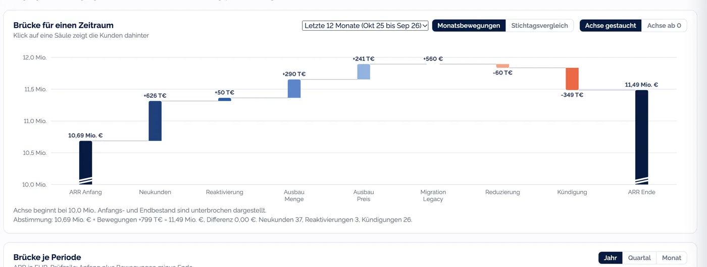
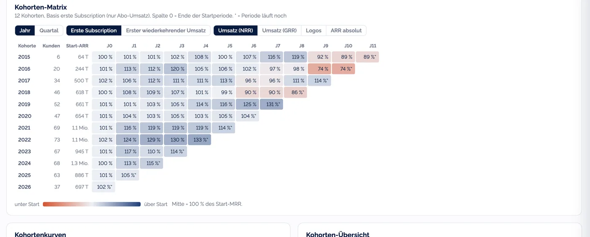
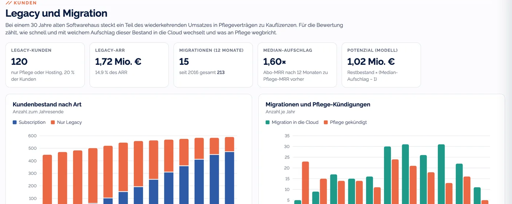
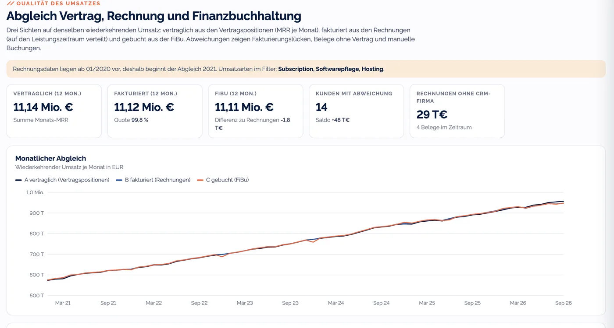
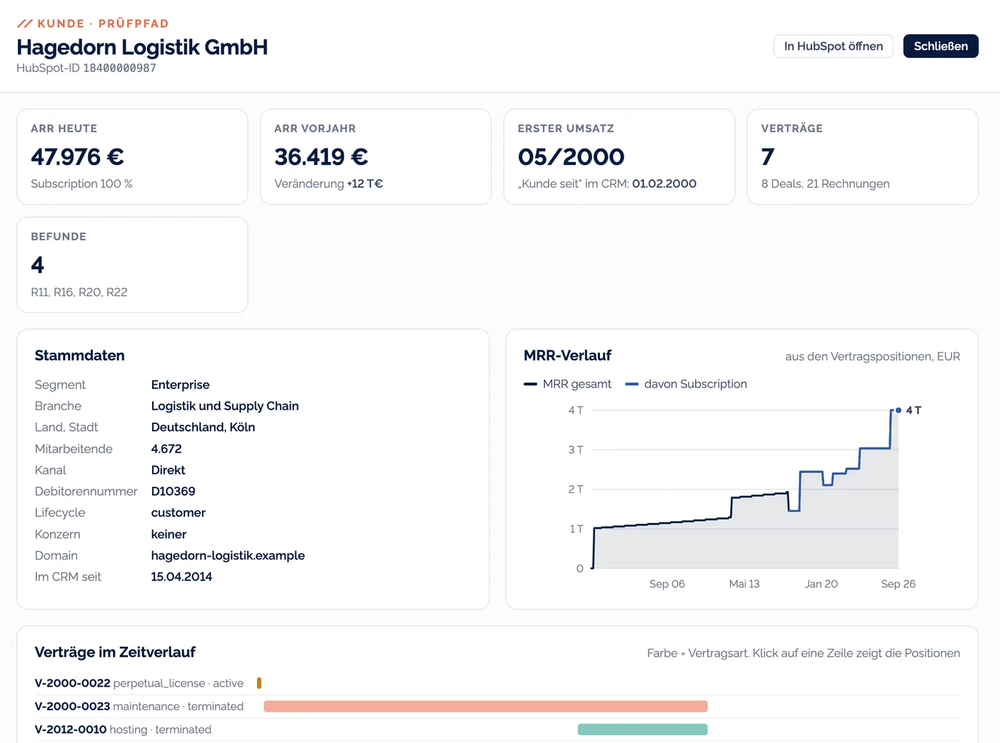
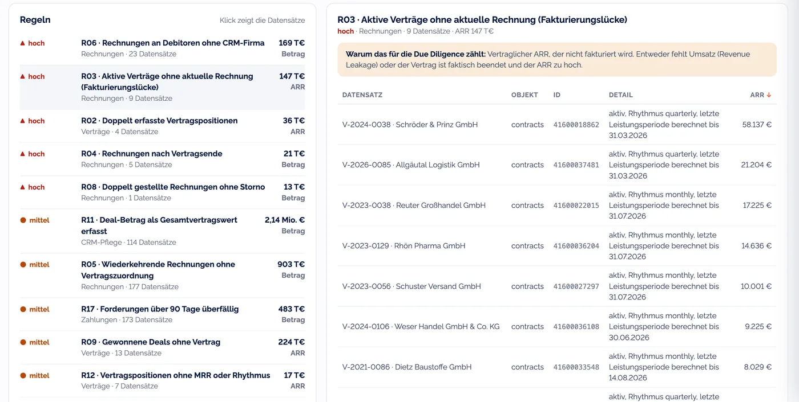

Ihr ARR, belegt bis zum einzelnen Vertrag.
ARRproof liest Verträge, Rechnungen, Zahlungseingänge und Erlöskonten und rechnet daraus die Kennzahlen, nach denen Käufer und Prüfer fragen: ARR-Brücke, Kohorten, Net Revenue Retention und den Abgleich mit der Finanzbuchhaltung. Hinter jeder Zahl steht der Datensatz, aus dem sie kommt.
- Jede Zahl mit Datensatz-ID
- Abgleich bis zur FiBu
- Auf dem HubSpot-Datenmodell aufgebaut
- Pilotphase

Ansicht aus dem MVP mit einem synthetischen Testdatensatz. Alle Firmen und Beträge sind erfunden.
Für diese Momente gebaut
Ein Verkauf steht an
Bevor der Käufer fragt, kennen Sie Ihre ARR-Brücke und die Lücken in Ihren Daten. Die Antworten liegen bereit, mit Beleg.
Sie prüfen ein Softwarehaus
Sie bekommen den MRR je Kunde und Monat aus den Verträgen und rechnen jede Kennzahl selbst nach.
Investoren fragen nach der NRR
Die Kennzahl kommt jeden Monat aus denselben Daten und mit derselben Definition. Abweichungen lassen sich erklären.
Sie bauen HubSpot neu auf
Die Setup-App legt die Felder an, die eine Umsatzprüfung später braucht, von Anfang an.
in EntwicklungAlle Kennzahlen auf einer Grundlage
Aus jeder Vertragsposition wird der MRR eines Kunden für jeden Monat ihrer Gültigkeit. Auf diesem Würfel aus Kunde und Monat rechnen alle Auswertungen, deshalb passen Brücke und Kohorten zum Abgleich mit der Buchhaltung.
ARR-Brücke
Neukunden, Ausbau nach Preis und Menge, Migration, Reduzierung und Kündigung, je Jahr, Quartal oder Monat. Mit Prüfzeile, die auf den Cent aufgeht.
Kohorten und Retention
Netto- und Brutto-Retention rollierend über zwölf Monate, dazu Logo-Retention und Kohorten nach Jahr oder Quartal.
Abgleich
Umsatz aus Verträgen gegen Rechnungen und Erlöskonten, je Monat und je Kunde. Dazu Forderungen und Rechnungsabgrenzung.
Prüfbefunde
22 Regeln über CRM, Verträge, Rechnungen und Zahlungen. Jeder Befund nennt den Datensatz und die Auswirkung auf ARR oder Umsatz.
Kohorten, gebildet aus den Vertragsdaten
Eine Kohorte beginnt mit dem ersten Monat, in dem ein Kunde wiederkehrenden Umsatz bringt. ARRproof leitet diesen Monat aus den Vertragspositionen ab. Ein manuell gepflegtes Feld „Kunde seit“ wird dafür nicht gebraucht, im Testdatensatz widerspricht es bei 88 aktiven Kunden den Verträgen.
- Basis wählbar: erste Subscription oder erster wiederkehrender Umsatz inklusive Pflege
- Umsatz-Retention netto oder brutto, Logos oder ARR absolut, dazu die Kurven je Kohorte


Für Softwarehäuser mit Geschichte
In vielen Häusern laufen Kauflizenz mit Softwarepflege und Abo nebeneinander, oft noch mit Hosting. ARRproof zeigt, wie viel ARR noch an Pflegeverträgen hängt und mit welchem Aufschlag Kunden in die Cloud wechseln.
- Softwarepflege im ARR per Schalter ein oder aus, alle Auswertungen rechnen sofort neu
- Aufschlag je Migration nach zwölf Monaten, dazu der Restbestand mit Lizenzalter und offenen Angeboten aus der Pipeline
Vertrag, Rechnung und Buchhaltung im monatlichen Abgleich
Drei Sichten auf denselben Umsatz: vertraglich aus den Vertragspositionen, fakturiert aus den Rechnungen auf den Leistungszeitraum verteilt und gebucht auf den Erlöskonten. Wo sie auseinanderlaufen, nennt ARRproof den Kunden und den Grund.
- Abweichungen je Kunde mit Einordnung
- Manuelle Buchungen und Kursdifferenzen getrennt ausgewiesen
- Forderungen nach Alter und DSO
- Passive Rechnungsabgrenzung direkt aus den Leistungszeiträumen


Vom ARR bis zur Zahlung, für jeden Kunden
Jede Zahl lässt sich aufklappen: Von der Brücke geht es zu den Kunden, vom Kunden zu Verträgen, Positionsversionen, Rechnungen und Zahlungen. Jede Zeile trägt ihre HubSpot-ID.
- Verträge im Zeitverlauf: Kauflizenz, Pflege, Hosting, Abo und Nachträge
- Jede Vertragsposition mit Gültigkeit, Änderungsgrund und Vorgänger, so wird der Preiseffekt sichtbar
- Die Befunde zum Kunden stehen direkt in der Ansicht
- Export als CSV für Ihre Arbeitspapiere, vom MRR-Würfel bis zur Befundliste
Die Lücken in den Daten finden Sie vor dem Käufer
In gewachsenen Portalen stehen Verträge doppelt im CRM, und manche Rechnung wird nie gestellt. ARRproof prüft das mit 22 Regeln und beziffert, wie viel ARR oder Umsatz betroffen ist.
- Aktive Verträge ohne aktuelle Rechnung
- Doppelt erfasste Vertragspositionen
- Rechnungen an Debitoren, die im CRM fehlen
- Deals mit dem Gesamtvertragswert im Feld Betrag
Im Testdatensatz sind solche Fehler bewusst eingebaut. ARRproof findet jeden davon.

ARRproof liest, was eine Umsatzprüfung braucht
Für ARR und Abgleich braucht ARRproof Firmen, Verträge, Rechnungen und Zahlungen. Personen braucht es dafür nicht. Die Anbindung ist deshalb so geplant, dass Kontakte, E-Mails, Notizen und die Aktivitäten Ihrer Mitarbeitenden gar nicht erst abgerufen werden. Eine Leistungskontrolle über das Werkzeug ist damit ausgeschlossen.
Die übrigen Daten verarbeiten wir in Ihrem Auftrag, mit einem Vertrag zur Auftragsverarbeitung. Für den Betrieb ist ein Rechenzentrum in Deutschland vorgesehen.
So rechnet ARRproof
Für Prüferinnen und Prüfer zählt, ob eine Zahl nachvollziehbar ist. Die Definitionen stehen deshalb in der Anwendung und lassen sich in Ihre Arbeitspapiere übernehmen.
MRR-Würfel
Jede Vertragsposition schreibt ihren MRR in jeden Monat ihrer Gültigkeit. Daraus entsteht eine Matrix aus Kunde und Monat, auf der alles rechnet.
Stichtag Monatsende
Eine Position zählt in einem Monat, wenn sie am Monatsende gilt. Eine Kündigung zum 14. fällt damit schon aus diesem Monat heraus.
Zwei Brückenmethoden
Monatsbewegungen summiert oder Stichtag gegen Stichtag. Beide gehen in Summe auf, die Zusammensetzung unterscheidet sich.
NRR und GRR
NRR = MRR heute / MRR vor 12 Monaten für alle Kunden mit Umsatz vor zwölf Monaten. Die GRR kappt jeden Kunden bei seinem Ausgangswert.
Neue HubSpot-Portale von Anfang an prüfbar
In vielen Portalen fehlen Laufzeit, Verlängerung, Kündigungsfrist und Vertragsende, also genau die Angaben, aus denen sich ARR und Kohorten rechnen lassen. Die Setup-App für den HubSpot Marketplace legt diese Felder beim Einrichten an, nach dem Datenmodell, auf dem ARRproof rechnet.
- Felder für Verträge, Gültigkeiten an Positionen, Leistungszeitraum an Rechnungen und die Debitorennummer an der Firma
- Legt nur Felder an. Ihre Datensätze bleiben unberührt
In vier Schritten zum ersten Ergebnis
Gespräch
Wir klären, was geprüft werden soll und mit welchen Systemen Sie arbeiten.
Daten bereitstellen
Lesender Zugang zu HubSpot, dazu Exporte der Rechnungen und Kontoauszüge. Die Erlöskonten liefert Ihre Buchhaltung.
Befunde klären
Die Prüfregeln laufen. Offene Punkte bekommen Sie mit Datensatz-ID, damit sie sich schnell klären lassen.
Ergebnis
Kennzahlen zum vereinbarten Stichtag und den Prüfpfad je Kunde, beides auch als Export.
Demo am Testdatensatz
- Alle Auswertungen an einem fiktiven Softwarehaus, bis zur einzelnen Rechnung
- Danach sprechen wir über Ihre Daten
Pilot mit Ihren Daten
- Ihre Daten zu einem vereinbarten Stichtag
- Befundliste mit Auswirkung auf ARR und Umsatz
- Exporte für Ihre Arbeitspapiere
- Für Softwarehäuser und für Prüfer im Mandat
Mit den Ergebnissen sind Sie nicht allein. Wir sprechen gern anhand von ARRproof mit Ihnen über Ihre Daten und bringen Verträge und CRM gemeinsam in Ordnung.
Was ARRproof aus Ihren Systemen holt
Sehen Sie es sich einmal in Ruhe an.
Eine Stunde am Testdatensatz: Brücke, Kohorten, Abgleich und Prüfpfad. Danach sprechen wir über Ihre Daten.
Demo vereinbarenWir suchen Mandate, in denen wir ARRproof gemeinsam mit Ihnen an echten Daten erproben. Schreiben Sie uns, welche Kennzahlen Ihnen heute die meiste Arbeit machen.
Häufige Fragen
Was ist ARRproof?
ARRproof ist eine Anwendung der CogniCore IT Solutions GmbH für die Umsatzprüfung von Softwarehäusern. Sie rechnet aus Verträgen, Rechnungen, Zahlungen und Erlöskonten die Kennzahlen einer Financial Due Diligence und belegt jede Zahl mit dem Datensatz, aus dem sie stammt.
Für wen ist ARRproof gedacht?
Für Softwarehäuser mit wiederkehrendem Umsatz, die sich auf einen Verkauf, eine Finanzierung oder ein Investorenreporting vorbereiten. Und für Prüferinnen und Prüfer, die solche Unternehmen bewerten und die Zahlen des Managements nachvollziehen wollen.
Welche Kennzahlen rechnet ARRproof?
ARR und MRR nach Umsatzart, die ARR-Brücke mit Neukunden, Ausbau nach Preis und Menge, Migration, Reduzierung und Kündigung, Net und Gross Revenue Retention, Logo-Retention, Kohorten, Kundenkonzentration, Verlängerungstermine und vertraglich gesicherten Restumsatz, den Abgleich mit Rechnungen und Erlöskonten, Forderungen und DSO, passive Rechnungsabgrenzung sowie CAC, Payback und Rule of 40.
Woher kommen die Daten?
Firmen, Deals, Positionen, Verträge und Rechnungen aus HubSpot, Zahlungseingänge aus den Kontoauszügen und Erlös- sowie Kostenkonten aus der Finanzbuchhaltung, etwa als DATEV-Export. ARRproof ist auf das Datenmodell von HubSpot ausgelegt.
Liest ARRproof personenbezogene Daten?
Für die Auswertung braucht ARRproof keine Kontaktdaten. Die Anbindung ist so geplant, dass Kontakte, E-Mails, Notizen und Aktivitäten nicht abgerufen werden. Firmendaten, Verträge und Rechnungen verarbeiten wir im Auftrag, mit einem Vertrag zur Auftragsverarbeitung.
Verändert ARRproof etwas in HubSpot?
Die Auswertung liest nur. Die geplante Setup-App legt nach Ihrer Freigabe Felder und, wo Ihre HubSpot-Stufe es erlaubt, ein Objekt für Verträge an. Datensätze verändert sie nicht.
Wie geht ARRproof mit Softwarepflege und Kauflizenzen um?
Einmalige Lizenzerlöse zählen nicht zum ARR. Ob Softwarepflege als wiederkehrend gilt, ist eine Bewertungsfrage, deshalb lässt sie sich per Schalter ein- oder ausrechnen. Migrationen aus Pflegeverträgen in ein Abo stehen in der Brücke in einer eigenen Zeile.
Was kostet ARRproof?
Die Demo am Testdatensatz ist kostenlos. Für einen Pilot mit Ihren Daten vereinbaren wir nach dem ersten Gespräch einen Festpreis. Eine Preisliste gibt es noch nicht.
Wie weit ist ARRproof?
ARRproof ist in der Pilotphase. Die Auswertung läuft heute auf einem synthetischen Testdatensatz. Die Anbindung an echte HubSpot-Portale und die Setup-App für den HubSpot Marketplace sind in Entwicklung.
Wer bietet ARRproof an?
Die CogniCore IT Solutions GmbH aus Köln, HubSpot Solutions Partner und Microsoft Partner. Von CogniCore stammt auch BP-Docs, die Dokumentation von HubSpot-Portalen.